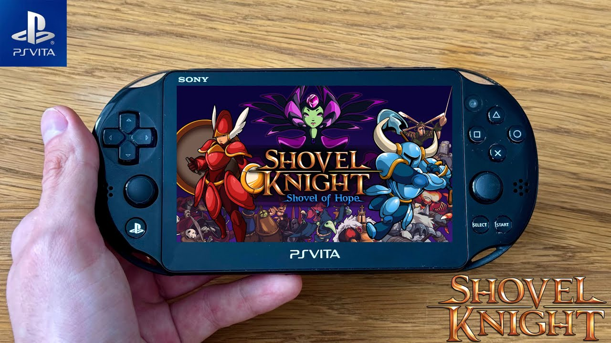
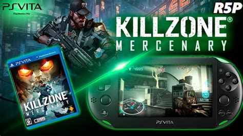
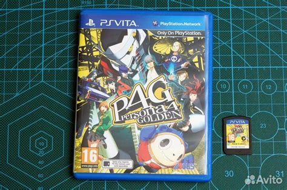

The PS Vita has a really good library with a lot of games that people swear are overlooked classics.
It is a library that is made up of cult classics, but I can't start diving into a ton of them as they are all priced as they were at launch.
Since the PS Vita store never does sales, I just went ahead and got some indie games and a couple of shooters that hit my interest.
Why indie games and shooters? Indie games because this controller is made for it, being closer to the original SNES controller than nintendo's 3DS.
This makes it more accessible for platformers that I like from indies.
Shooters because there hadn't been a controller that could pull them off like this during this era.
Even now, all the "handheld" gaming consoles are really bulky that have two comfortable joysticks, if you go to something smaller a shooter would suffer as a result.

Ok, to start off is Shovel Knight, a retro styled 2D platformer and if this game isn't the best platformer of all time then it is the best retro platformer of all time.
This game is so tightly made and is brimming with so much content that I could rave about it for hours, but I am focusing on it's appeal as a PS Vita game here.
I am going to bring this up a couple of times, but comparing this console to the 3DS in terms of 2D platforming the winner is clear.
The Vita lets me play games while preferring either the joysticks or the D-pad, and for this game the D-pad is a neccessity.
You can try to play it with a joystick, but the feedback from it is hit or miss.
I love playing on the 3DS, but it's preference to the joystick makes 2D platformers an unfortunate miss.
I know it is probably not a suprise, but Shovel Knight also runs great.
It is the original team who ported it to this console so they were able to make it run great at 60 FPS during every minute of gameplay.
I love it, I cannot stop playing it, but I need to move on.

So I played both Killzone and Call of Duty on this console, and since they are both twin-stick FPS coming from the same generation I will lump them together.
They both play really well, and in their campaigns they feel like regular console experiences on the go.
The levels, cinematics, and scenarios all feel like something I would get in a standard FPS campaign.
I could see how that would hurt the game at release, like yeah it is a regular FPS campaign during a time where those were well hated.
I did get lucky and bought this game when I originally when I got a PS TV, so I didn't have to pay it full price,
and as a kid who didn't have any online multiplayer subscriptions I do miss just playing through a campaign.
I do think that both games suffer from the controls, like there are no triggers and the joysticks aren't clickable.
FPS games have come to rely on both of those things during the time, as the way to run and melee is to click, and the firing of your weapons is done through the triggers and bumpers.
The solutions they come up with are kind of awkward, as you have to either touch the touch screen or hit the d pad, which does feel a bit clunky.
I wonder if just completely changing the controls, or just having the game be more like a boomer shooter would've been better,
but there solutions aren't the worst thing ever and don't destroy the experiences.

I am kind of jumping the gun here, as this is technically a PS2 game that was enhanced for the ps vita, but I originally got a PS TV (which was functionally a vita) because of this game.
It runs great, keeps the graphics at an amazing quality, and I cannot imagine the game without the content added.
This is a really really great game, but I do feel kind of weird coming back to play it as this is the first time playing a Persona game as an adult.
I really look at some of this stuff and go "Oh?" but if you can get over those aspects then I would recommend it 100%.
I really did have a good time on the Vita's native games, but I do think that the native games do show an issue that the console had: the games itself.
The games it has are great, but stuff like shovel knight are available on other consoles, and stuff like Killzone and Call of Duty aren't really stand out masterpieces on the system.
They are games made for fans using the stystem, but their console counterparts are the definitive experiences for those franchises.
I also find myself having a hard time justifying getting other games just for the vita, because all of it's best exclusive games can now be found on other consoles.
Persona 5 Golden itself is on other consoles, and I can normally get it closer to $20 dollars rather than $50, and that is the norm for it's other great games.
The only game that I don't think is on other consoles is the Uncharted game for the Vita, which I would consider getting, but I didn't like the originals to begin.
But this is all a minor point for me, as weird as it sounds I ended up going for the purchase of a Vita not for the games intended for it but the games you can add in afterwards.
Homebrew Games and Applications
So Homebrew Apps are amazing works of love to a console, a game, along with gaming and programming itself.
You are taking a game to put it on a console for no cost to yourself, but to just share it with the world is one of the coolest things in the gaming media.
The Vita is one of those consoles that shine in this aspect, as it was made incredibly powerful for a handheld of the time.
They made it more powerful than the PS2 to make console like experiences on a handheld, which let's several older and newer titles have the opportunity to play here.
But you have to keep in mind that these are free fan projects, so they don't have all the resources need in order to make it a full experience on the console.
So when comparing the two, keep in mind that these are slightly altered PC versions more than full fledged ports.
Cuphead was one of the most hyped and most beloved indie games when it came out, mixing traditional rubberhose animation with old school gunner gameplay.
I ended up fully beating it during Covid but I picked up the PC version with all of it's DLC in order to put it on the Vita when I got it.
I really like playing Cuphead on the Vita, as it's simple controls and constant death in the game make it great to pick up, put a couple attempts in, and then slide it back into my pocket.
The game is perfect for the smaller handheld format, and I cannot believe that it wasn't an original port for the console.
Now there are some noticeable holes in the port, and unfortunately you can see this almost instantly.
Although Cuphead is retro-styled in it's game design, it isn't retro-styled in the it's art. It has a TON of animation running at once which I think tanks the games' framerate.
Some textures come out super blurry, while others are fully replaced, but the game does keep a decent framerate during the bosses.
Now when you go into the run and gun sections, it struggles. Enemies pop in and out of frame, and sometimes they don't match their hitbox.
This is why I think that the system couldn't really handle the game as is, because the run and gun sections have a ton more animations for the system to handle.
In fact, one of the developers said that they can't even port over the DLC due to the demands of it being too much for the DLC too handle.
Now you still might not believe this and think that the game could've been fully ported over to the system, and you are probably right.
But, you have to keep in mind that we are talking about people doing this in their free time, meaning that it could take 40 hour weeks in order to do this.
And unless I am mistaken, the source code for Cuphead isn't out there in the public. It is really hard to modify a game if you do not have the original source code it came with.
Add onto the fact that they probably don't even have the developer kit for the vita either? Good luck Charlie.
Half-Life is a classic game that changed first person shooter games into something more cinematic than what they were before.
Letting you experience story instead of just jumping straight into the action of a shooter, and in the process turning an ex-Microsoft employee a millionaire.
It is a classic that changed the industry that I have never finished.
That is now changing since I am able to play this game on the go with my vita, or it would be if I didn't have to reinstall the game again.
Back up those save files kids.
Yeah I started up the game the first time I had to completely restart it as the game became unplayable after getting through the intro scene.
I ended up having to reinstall it just to get the game to run, but besides that the game runs almost flawlessly.
The only real issue I have is the load times in between zones which is going to happen with a homebrew port.
It does help that the game is pushing 30 and most cellphones could run it at 60 fps, but having it on a console with two joysticks is great.
This is one of the games I wanted to play with the Vita, a nice shooter with a great history, able to take it on the go.
Overall I am happy with the homebrew apps that the Vita offers. They aren't the best running versions of the game, but they are labors of love.
Made for niche hobbiests like myself to look at say "Wow, just regular people made this".
If you ever think anything in coding is impossible I encourage you to look at these ports.
I do think that if you are looking for something close to a full playthrough you should look at older games.
I might get something like Blasphemous on the Vita, but despite being a pixel game it doesn't run at full strength.
Stuff like the port of Ocarina of Time runs flawlessly, or other games like GTA San Andreas or Simpson's hit and run are near perfect.
But those games are from platforms that are normally emulated. How does emulation itself work on the Vita?
Emulation on the PS Vita
So Emulation on the Vita is one of the main reason I got it.
The Vita was said to have power rivaling the PS2 making it a great option for big budget games, but also for emulation.
Now there are some warnings that come with being around as strong as the PS2, one thing being that you can't just emulate the PS2 itelf.
Emulation comes from trying to replicate the specs of original hardware on something else,
meaning you will need a decent more power than the game really needs in order to make it happen.
This means that games that are PS2 level have to be full on ports, and some games from the generation prior might not run completely up to speed.
So let's start off at the weaker end and go up the chart. The game boy advance is the least powerful and it plays amazing.
I have no problem running Metroid Zero Mission on this console.
The layout of the Vita also makes the controls be almost a one to one for the original system, making hopping in a breeze.
SNES is the same thing as well.
I think these two are pretty similar if not the same in power, but I think that the SNES has a slight upperhand to it.
It runs well, playing Donkey Kong Country 2 like it does on original hardware, and like the GBA the Vita layout is identical to the SNES.
It runs great, feels well on controls. No complaints.
PS2 is where we get a little dicey.
All the games I played are official re-releases from their original publishers, most of them being great while others...
Ok! So like I said before, PS2 games have to be full on ports when they are brought over to the Vita.
Most of the games are ported over great, running like they did on the PS2 with HD textures.
It is what I would want from the publishers.
But you get the ocasional game like The Jak Daxter collection, that has slowdown that makes these games almost unplayable.
I wouldn't be suprised if there is a fan-made patch out there to make them run smoothly, but the fact that it was released like this is crazy.
Now that is when I can get through these games at all.
This a nit pick in itself, but I hate how most PS2 games don't let me skip cutscenes.
But besides that the PS2 ports are hit and miss, just look it up before downloading it and then go from there.
Now the n64 is a weird console to emulate, as I don't think it has fully ever been cracked.
Like I think to this day n64 emulation is a little off because the anti-piracy coding on it was so tough.
Luckily that doesn't really affect this emulator. Games run next to near perfect performance minus some graphical hiccups.
The few games that don't run at 30-60 fps are noted in the emulator to have issues, and when the issues happen they run like they did on original hardware!
The only other thing I would say is the normaly pitfalls of n64 emulation, like the c stick being mapped to the right joystick but that comes with the territory.
If you want to get some of the classic n64 library out of the way and don't mind some minor jank, this is the emulator for you.
So the ps1 adn psp are the last ones I am going over because they are just the best.
I believe that the PS-Vita is built off the same architecture that the PSP is, the PSP was built using PS1 hardware.
You see where I am going with this?
PS1 games and PSP games run flawlessly, whether I bought them off the PS-Store or uploaded a disk remotely, they run just like they did on original hardware or better.
In fact, the only thing I really don't like is again, the lack of bumpers. It brings down shooters and really does bring down a game like Megaman Legends.
I am not spending time on a game that has unskippable dialogue, while it relies heavily on the bumpers the console doesn't have making me use the back touch screen.
Now there is a grip case that adds on grippers, making it so the case uses the touch screen on the back to cause the triggers, but it is a $35 dollar purchase.
I don't think I will be getting it, at least not for PS1 games, the PS Vita can stream games from the PS3-PS5 consoles and from PC so maybe for that.
But a $30 dollar add on for a few PS1 games? Nah.
Especially when there is still so much you can play, I don't mean to harp on the trigger things because there are so many other games that hardly use them.
I am playing Crash Bandicoot and Xenogears, those games run perfectly and don' require any extra set up at all.
PSP games run just like they did on original hardware as well, but I didn't really get into them. The only PSP game that I had any interest in was Peace Walker.
It ran great, but I don't want to get too deep into a playthrough until I finish 3 again.
Overall Thoughts on the Vita
So the Vita isn't the perfect homebrew console that I thought it was going to be.
If you're looking for something to get started on I would honestly startt with a Nintendo console like 3ds or Wii.
The games I am playing on the Vita are mainly from Nintendo's library, and honestly those systems have bigger fanbases for their homebrew scene.
The installation might take a little more work, but once you get it booted the games don't really require a ton of messing with to get working.
If you are familiar with homebrew-ing, I would recommend the Vita.
It offers a great selection of unique hardware that is constantly getting added to,
it really does show the spirit of homebrewing by making a console that wasn't a success at first get a second life with those who see it for what it is.